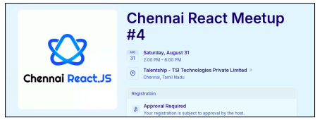

HTML Basic Elements Task
weekly Meeting Notes:
Sissions:
Batch 3:
Technical Sessions:
Flowcharts
,
Number System
,
Coding Standards
,
Internet Basics
, and
Terminal Commands
Sessions were conducted for Batch 2.
Technical Sessions have been started.
HTML basics
tags/elements, images, links
,
and lists
had been completed.
The remaining topics are
tables, grouping tags, forms, iframe, and audio/video tags
.
Non-Technical Sessions:
Gsuite, LSRW, Feedback, Toastmasters, and Meeting Etiquette sessions were conducted last week.
Communication Sessions are scheduled for the current week.
Batch 2:
Assessment:
Assessments are evaluated and marks are provided for batch 2.
1on1 is also conducted for batch 2.
Projects:
They are about to complete their full-stack projects.
Other Happenings:
Technical Events:
A few students from Batch 2 attended the
Chennai React 3
event last month.
A couple of students have registered for the upcoming chennai React 4 event -
Event Link

Non-Technical Events:
students from Batch 2 attended the
board games event
that happened at Adyar last week